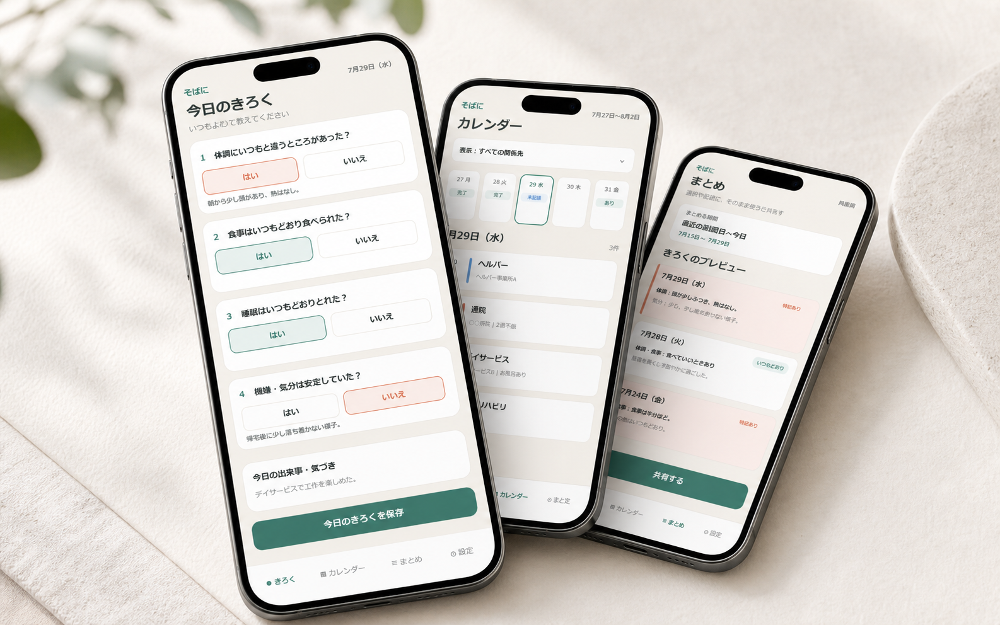
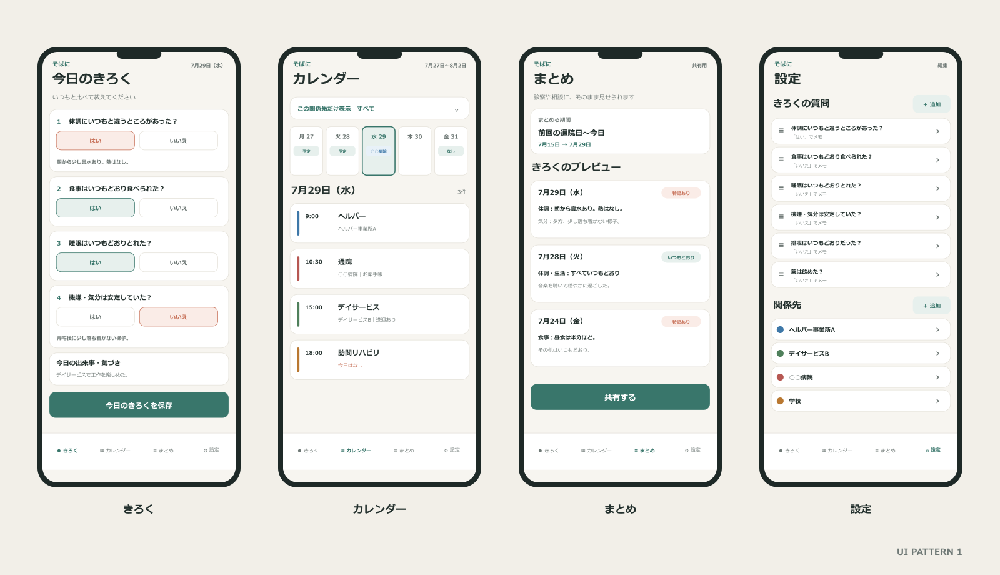
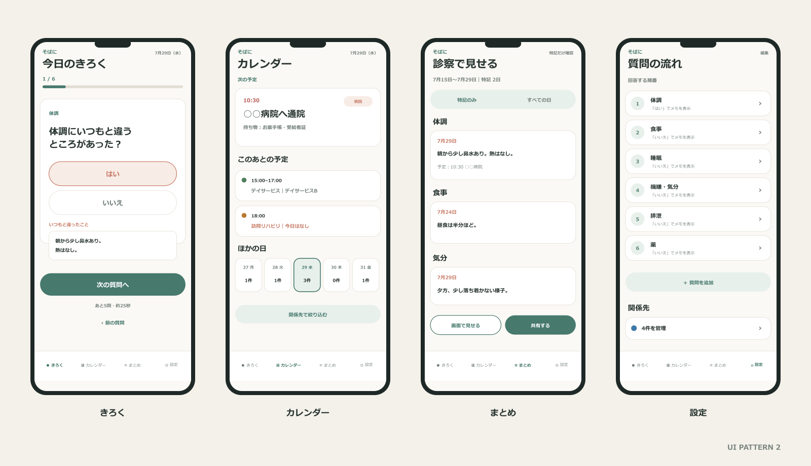
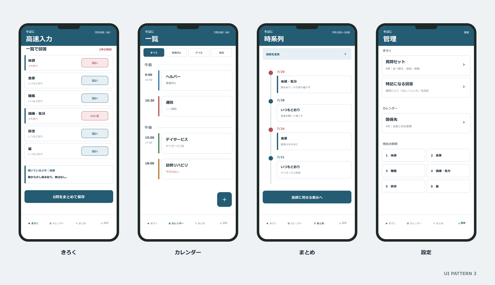

30秒の問診式
はい・いいえで答え、いつもと違う日だけメモを残します。
支える人の毎日を、30秒でそっと記録。
障がいのある家族をケアする人のための体調日記と予定カレンダー。疲れた日でも迷わず記録でき、通院や面談で必要な経過をまとめられます。
ベータ版を試してみる →
Features
はい・いいえで答え、いつもと違う日だけメモを残します。
病院、学校、ヘルパーなど複数の予定を関係先ごとに整理。
期間を選び、特記のあった日を通院や面談で見せられます。
How to use
その日の様子を、いつもの質問に沿って記録します。
通院や支援先の予定を色で見分け、家族の動きを把握。
診察前などに経過をまとめ、画面やLINEで伝えます。
掲載画面はベータ版のUIです。正式公開までに表示や機能が変わる場合があります。
Beta screens



使ってみたい方はメールでご連絡ください。
参加希望をメールする →